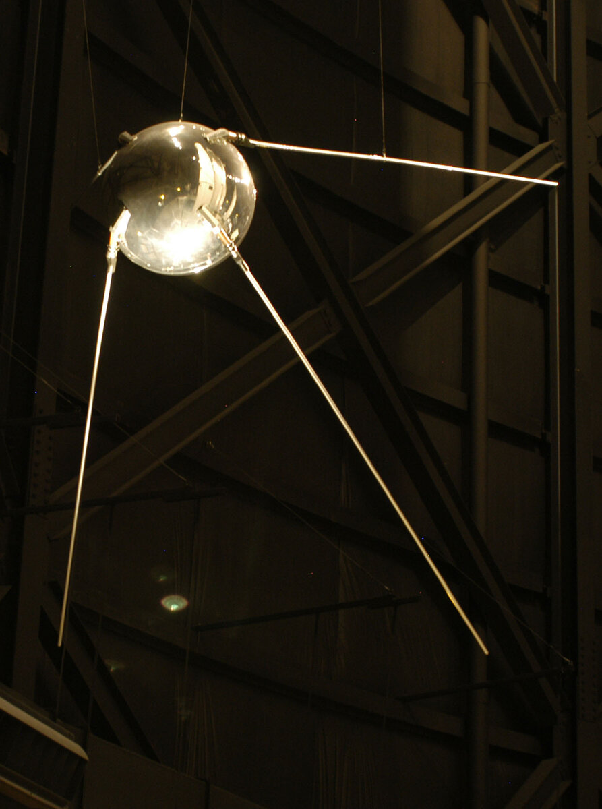
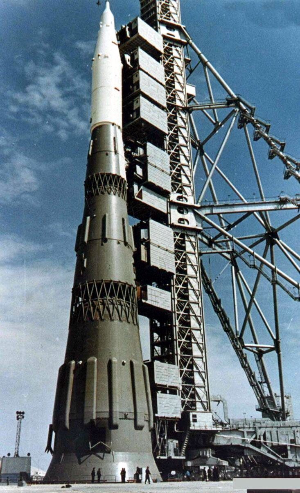

C1 · American History
The Space Race
Two countries spent a decade proving they could put something above the other's head. The rockets were the same rockets that carried warheads.
Play the audio and follow along, then read it again on your own. Tap or hover over a highlighted word to see what it means.
On 4 October 1957 a polished metal sphere the size of a beach ball went into orbit, and amateur radio operators across the world found they could hear it. Sputnik 1 did almost nothing — it transmitted a beep for three weeks and burned up in January — but the beep was audible from American soil, which was the point nobody missed. A machine was passing over the United States several times a day, and the United States could not stop it.

The panic that followed was not really about the satellite. A rocket capable of lifting eighty-three kilograms into orbit is a rocket capable of delivering a warhead to another continent, and everyone involved understood that the two capabilities were the same capability. The civilian space programs of both countries grew out of ballistic missile programs and were never fully separable from them.
They also grew out of the same source. The German V-2 that fell on London in 1944 was the first ballistic missile, and at the end of the war both sides took what they could of the team that built it. The Americans took Wernher von Braun and more than a hundred of his engineers; the Soviets took much of the hardware and many of the technicians. This is the part of the story that tends to be left out of the celebration: the V-2 was assembled by prisoners at Mittelbau-Dora, where more people died building the weapon than were killed by it, and von Braun had visited the works.
The Soviet lead held for four years, and it was mostly the work of one man whose name was a state secret. Sergei Korolev had been arrested in 1938, beaten, and sent to a labor camp in Kolyma; he was brought back to work on rockets and spent the rest of his life designing them under the anonymous title of Chief Designer. He was announced to the world only after he died in 1966.
Under Korolev the firsts came quickly: the first satellite, the first animal in orbit, the first photographs of the far side of the Moon, and on 12 April 1961 the first human being. Yuri Gagarin's flight lasted 108 minutes and a single orbit, and he landed by parachute, having ejected from the capsule — a detail the Soviet Union concealed for years because the record rules of the time required a pilot to land with his craft.
Three weeks later, in a speech to Congress on 25 May 1961, President Kennedy committed the United States to landing a man on the Moon before the decade was out. The choice of the Moon was strategic rather than scientific. It was far enough away that the existing Soviet lead in heavy rockets would not decide it, which meant it was the first contest the United States had a reasonable prospect of winning.
What followed was an industrial effort on a scale that is easy to state and hard to feel: at its height Apollo employed some four hundred thousand people across twenty thousand firms and universities, and consumed more than four per cent of the federal budget in 1966. The Soviet program, by contrast, was never unified. Korolev's giant N1 rocket was developed in competition with rival design bureaux rather than alongside them, and it failed on all four of its test launches.

Both sides killed people. Three astronauts — Grissom, White and Chaffee — died in a fire inside a sealed Apollo 1 capsule during a ground test in January 1967, in a pure oxygen atmosphere nobody had thought of as a fuel. Three months later Vladimir Komarov died when the parachutes of Soyuz 1 failed, on a flight that engineers had reportedly warned was not ready. Neither program stopped, and neither was quite the same afterwards.
The race ended in July 1969, and it ended suddenly. The Soviet Union had not publicly committed to a Moon landing and so, having lost, could maintain that it had never been running, which is why the existence of the Soviet lunar program was denied until 1989. Within four years both sides had turned to space stations, and in 1975 an Apollo capsule docked with a Soyuz in orbit and the two commanders shook hands on television.
It is tempting to describe the whole thing as a detour — enormous sums spent to plant a flag. But the decade left behind the deep-space tracking network, satellite weather forecasting, communications satellites, and a way of running vast technical projects that had not existed before. It also left a photograph of the Earth taken from beside the Moon, which turned out to persuade more people of the planet's fragility than any argument had.
Key Vocabulary
- an orbit the curved path of an object around a planet or star
- a warhead the explosive part of a missile
- ballistic (of a missile) powered at launch and then falling freely to its target
- a capsule the small sealed craft in which a crew travels in space
- to eject to be thrown out of an aircraft or craft, usually for safety
- to conceal to keep something hidden
- a bureau an office or department, especially a state one
- unified brought together into one organized whole
- a detour a longer, indirect route; by extension, effort that leads away from the goal
- fragility the quality of being easily damaged
The Space Race — C1 · American History · Renan the Teacher, English Language Academy · https://renangrossi.github.io/englishclasses/reading/c1/the-space-race.html
Interactive Exercises
Practice
Complete each exercise, then click Submit to see your score and an explanation for every answer.
Speaking & Writing
Discussion
There are no right answers here — use these to practice speaking, or write a short answer to each.
- The text argues that the civilian and military sides of rocketry were never separable. Does that change how the achievement should be remembered?
- Both countries accepted risks that killed crews rather than lose time. Where is the line between acceptable risk and recklessness in a project like this?
- Was the money well spent? Argue the case the last paragraph makes, and then argue against it.